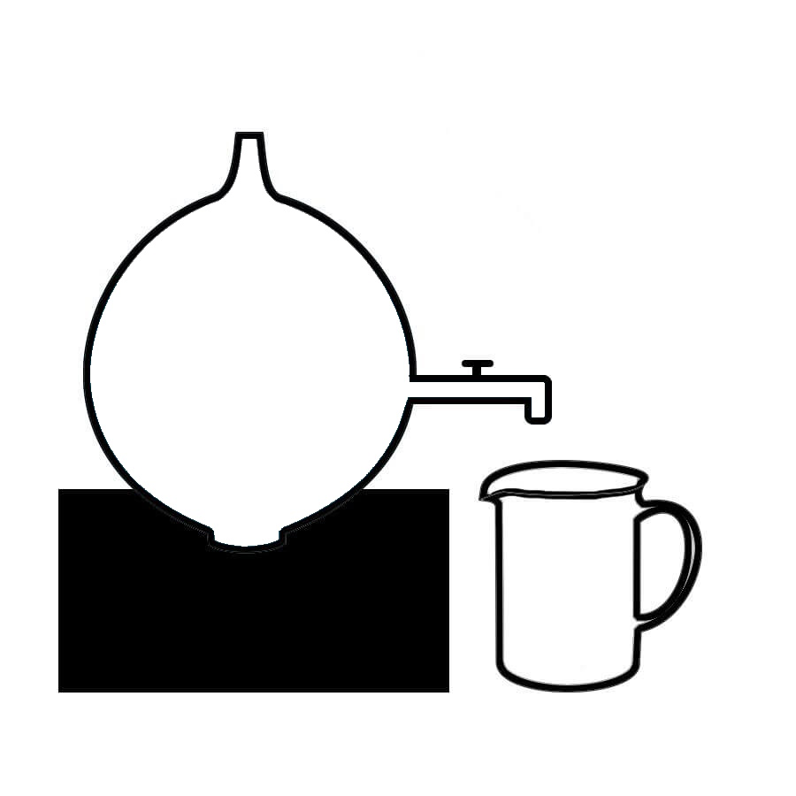

Helmholtz Resonator


Added Successfully!
Instructions
- Select "Frequency of tuning fork" using "Frequency of tuning
fork" slider.
- Click the "Fill Resonator" button to fill the resonator with water.
- Click the "Start" button to start the experiment by activating the tuning fork with rubber pads and letting water flow.
- Click on the "Add to Table" button to add the frequency and volume of air column values to the table.
- Click on the "Observation" button to view the table.
- Click on the "Plot Graph" button to plot the graph.
- Click on the "V/n^-2 GRAPH" button to view the garph
| Frequency (HZ) |
Volume Of Air Column (CC) |